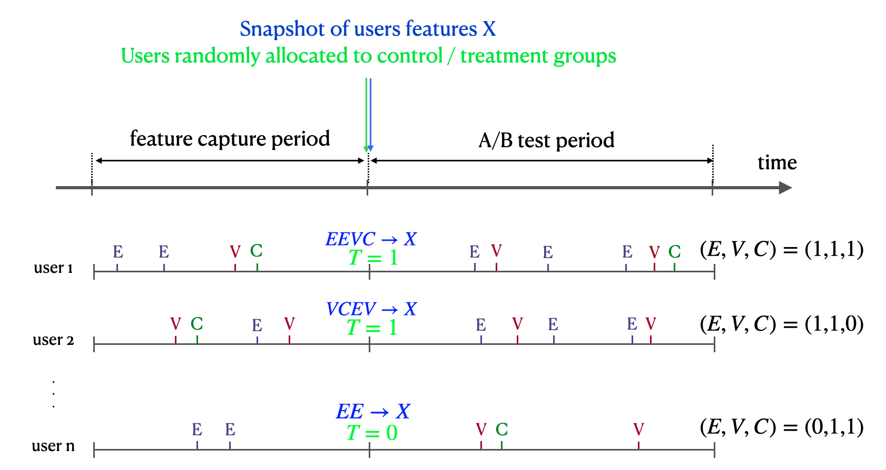
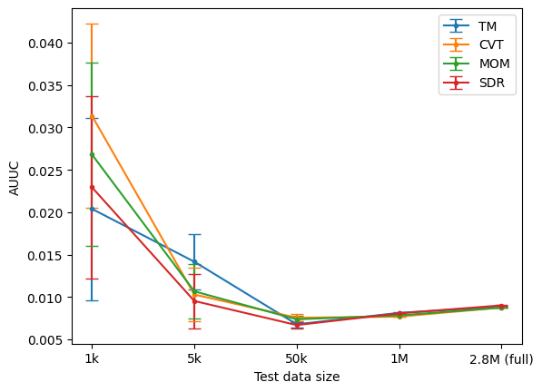
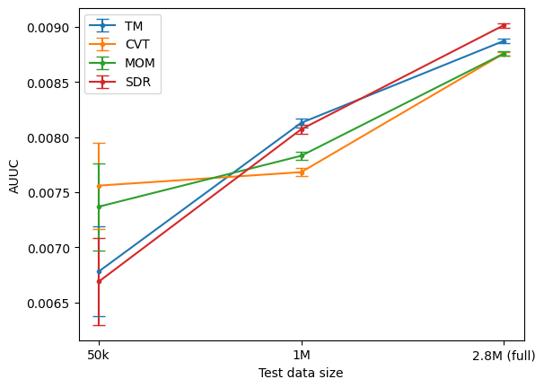
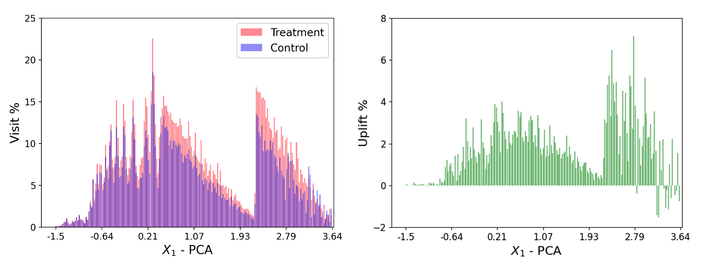

- 13,979,592 件CRITEO-UPLIFTv2 の件数。論文 Table 1 で比べている Hillstrom（42,693 件）や IHDP（747 件）より桁違いに大きい。
- 処置群 85%、訪問 4.70%処置群と対照群の比率も、結果ラベルの比率も大きく偏っている。コンバージョンの陽性率は 0.29% しかない（Table 1）。
- 100 万件からテストデータが 100 万件未満では 4 つのアップリフトモデルの信頼区間がほぼ重なり、100 万件以上で初めて区別できた（Fig. 4）。
因果推論の公開ベンチマークは、1980 年代の小さなデータに偏っていた
ITE 予測の研究では乳幼児の発達支援を調べた IHDP（1,000 件未満）と、職業訓練の効果を調べた Jobs（約 3,000 件）が今も主なベンチマークである。どちらも 1980 年代に集められた。アップリフトモデリングで公開されている例外的なデータは、電子メール施策の Hillstrom（論文本文では 64,000 件）くらいで、件数も特徴量の次元も現代の Web データには及ばない。
論文は、少数のデータで最高性能を競い続けると研究全体がそのデータに過剰適合する（conceptual overfitting）おそれがあり、公開データがないために非公開データで結果を報告して再現できなくなる例もあると指摘する。データが大きければ評価指標の分散が小さくなり、手法間の有意な差も捉えやすくなる。
ITE 予測は観察データを、アップリフトモデリングは RCT のデータを前提にする
どちらも処置 \(T\in\{0,1\}\) を変えると結果 \(Y\) がどう変わるかを特徴 \(x\) ごとに推定する。ITE 予測が推定するのは条件付き平均処置効果（CATE）である。
\(\mu_0, \mu_1\) は応答曲面と呼ばれる。ITE 予測は観察データを想定するので、処置の割り付けの偏り（選択バイアス）にも対処する必要がある。性能は真の効果との二乗誤差 PEHE で測るが、実データでは反実仮想の結果が観測できないので計算できない。そのため、実データの特徴量に人工の応答曲面を組み合わせた半合成データで評価するのが普通である。
アップリフトモデリングは処置群と対照群を無作為に分けた RCT のデータを前提にする。このとき CATE は観測できる量の差 \(u(x) = \mathbb{E}[Y\mid T{=}1, X{=}x] - \mathbb{E}[Y\mid T{=}0, X{=}x]\) で表せる。個人の真の効果は観測できないので、予測したアップリフトの大きい順に個人を並べ、上位の割合ごとに群のアップリフトを測るアップリフト曲線と、その曲線下面積 AUUC で評価する。
複数の広告主で実施した広告の RCT を、処置群の比率をそろえて 1 つにまとめた
Criteo は母集団の一部に広告を出さない incrementality test（RCT の一種）を複数の広告主で実施した。広告主ごとに、ある時点で各ユーザー（ブラウザの cookie で識別）を無作為に処置群か対照群に割り当て、その時点までの行動から特徴量 \(X\) を記録する。割り当て後の 2 週間に、広告への接触 \(E\)、サイト訪問 \(V\)、コンバージョン \(C\) があったかどうかを記録した。対照群には広告が出ないので \(T=0 \Rightarrow E=0\)、訪問せずに購入はできないので \(V=0 \Rightarrow C=0\) が成り立つ。
特徴量を割り当ての時点で一斉に記録するのは、時間による交絡を避けるためである。広告システムはユーザーの反応を見て入札を変えるので、テスト中の行動は処置にもそれ以前の行動にも影響される。また、広告主ごとに処置群の比率が違ったので、テストの識別子が隠れた交絡因子になっていた。この場合、モデルは特徴量からどの広告主のテストかを見分けるだけで、見かけの性能を上げられてしまう。2018 年に公開した初版（v1）にはこの問題があったため、v2 ではすべてのテストを同じ処置群比率になるようサブサンプリングした。

完成したデータは 13,979,592 行で、1 行が 1 ユーザーにあたる。列は特徴量 12 個（連続値 4 個、カテゴリ 8 個）、処置の割り当て、広告への接触、訪問とコンバージョンの 2 つの二値ラベルである。カテゴリ特徴量の水準数は最大 3,743 ある（Table 2）。処置群の比率は 85% で、論文は、広告主が売上の機会損失を嫌って対照群を小さくとるのが典型的だと説明している。広告主の名前も特徴量の意味も公開せず、特徴量の値はランダムなベクトル空間にハッシュした。さらにラベルに不均一な負例サンプリングをかけ、元の効果の水準を推測できないようにしている。
このページの数値は arXiv v1（2021 年 11 月 19 日）の本文と表による。Crossref で出版版は見つからなかった。
特徴量から処置を当てられないこと、特徴量で結果を予測できることを確かめた
まず、処置が特徴量と独立であるかを分類器による 2 標本検定（C2ST）で調べた。特徴量から \(T\) を予測する分類器の対数損失は 0.42307 で、ランダムな分類器の損失の中央値 0.42269 と有意な差はなかった（片側検定の p 値 0.13667、Table 3）。帰無仮説 \(T \perp X\) は棄却されず、論文はこれを独立性が成り立つ根拠としている。
次に、記録した特徴量に予測力があるかを確かめた。訪問とコンバージョンを予測する分類器は、常に平均値を出す分類器に比べて、それぞれ 34.74% と 32.22% 性能が改善した（Table 4）。技術的に記録しやすい特徴量を選んで匿名化したので、自明な結果ではないと論文は述べている。
テストデータが 100 万件以上になって初めて、4 つのアップリフトモデルの差が見分けられた
CRITEO-UPLIFTv2 を学習 80%、テスト 20% に分け、テストデータから既存のデータと同程度の件数（1,000、5,000、50,000）と 100 万件を抜き出し、テストデータ全体（約 280 万件）と合わせて AUUC を比べた。比べたのは Two-Model（TM）、Class Variable Transformation（CVT）、Modified Outcome Method（MOM）、Shared Data Representation（SDR）の 4 つで、正則化の強さを層化 5 分割交差検証で選んだ。
ラベルには訪問を使った。コンバージョンはラベルの偏りが大きく、アップリフトの信号が弱すぎるためである。評価指標は Devriendt らが処置の不均衡に頑健だとした「separate, relative」版の AUUC で、信頼区間は AUUC の test set bound で求めた。特徴量は連続値 4 個と、カテゴリ特徴量をランダムベクトルに射影した 100 個を one-hot 化したものである。
結果は図3のとおりで、テストデータが 100 万件より小さいうちは 4 手法の信頼区間がほぼ重なり、AUUC で区別できなかった。100 万件以上になると手法を区別でき、モデル選択ができるようになった。論文はこの難しいタスクには大きなデータが必要だと結論している。


応答曲面を変えると、ITE モデルの順位が入れ替わった
ITE 予測用には実データの特徴量に人工の応答曲面と偏った処置の割り付けを組み合わせた半合成版 CRITEO-ITE を作った。応答曲面は 3 種類ある。Hill（2011）の Case A（\(\mu_0 = x\beta,\ \mu_1 = x\beta + 4\) で効果が一定）、Case B（\(\mu_0\) が指数関数、\(\mu_1\) が線形）、そして論文が新たに提案する多峰型である。
アンカー点 \(c\) の近くでは効果がほぼ \(w_{1,c} - w_{0,c}\) になり、離れるほど指数的に影響が弱まる。この形は実データのアップリフトを第 1 主成分に沿って見ると単調でなく、山が複数あったこと（図4）に着想を得ている。処置の割り付けは結果の予測に最も効く特徴量 1 つのシグモイド関数で偏らせ、確率を \([\delta, 1-\delta]\)（\(\delta = 0.01\)）に収めて重なりの仮定を保つ。

実験では連続値 4 個とランダム射影 5 個を one-hot 化した 32 次元の特徴量を使った。多峰型はアンカー点 5 個、\(\sigma_c = 1\) とし、重みを一様分布から引いたあと平均処置効果がほかの曲面と同じ約 4 になるよう調整した。各曲面で 10 回データを生成し、毎回 10 万件を抜き出して 5 分割交差検証で調整し、学習とテストを半分ずつに分けて \(\sqrt{\epsilon_{\mathrm{PEHE}}}\) を測った。
比べたのは T・X・R・DR-Learner（基本モデルはランダムフォレスト）と TARNet、CFRNet である。CFRNet は Case B と多峰型で最良、DR-Learner は Case A で最良だった。X-Learner は Hill の 2 つの曲面で R-Learner を上回ったが、多峰型では逆になった（0.413 対 0.356）。論文はこの結果から、多様な応答曲面を用意することが重要であり、多峰型はその一つになると述べている。
費用も予算も扱わず、二値の処置の効果を評価するためのデータと手順を示す
この論文が推定・評価の対象にするのは、二値の処置（広告を出す群への割り当て）が訪問やコンバージョンに与えるアップリフト \(u(x)\) と、半合成版での CATE \(\tau(x)\) である。データには処置の割り当てとは別に広告への接触 \(E\) が入っているが、論文の実験では使っていない。
費用は扱っていない。データに広告費や売上の金額はなく、ラベルは訪問とコンバージョンの二値だけである。予算制約も出てこない。評価はアップリフトの順に並べたときの AUUC と、半合成データでの PEHE で行う。
ROI 順の割当て（ナップザック問題の連続緩和）で使う「効果 ÷ 費用」の比は、このデータからは直接作れない。ただし文献表の ROI 系の論文（DRP や rDRP など）は、訪問ラベルを費用、コンバージョンラベルを便益とみなしてこのデータを使っている（解説者の注）。その場合も、匿名化のために負例サンプリングをかけてあるので、データ上の効果の水準は元の広告の効果そのものではない点に注意が要る（解説者の注）。
@misc{diemert2021large,
title = {A Large Scale Benchmark for Individual Treatment Effect Prediction and Uplift Modeling},
author = {Diemert, Eustache and Betlei, Artem and Renaudin, Christophe and Amini, Massih-Reza and Gregoir, Th{\'e}ophane and Rahier, Thibaud},
year = {2021},
eprint = {2111.10106},
archivePrefix = {arXiv},
primaryClass = {stat.ML},
doi = {10.48550/arXiv.2111.10106}
}